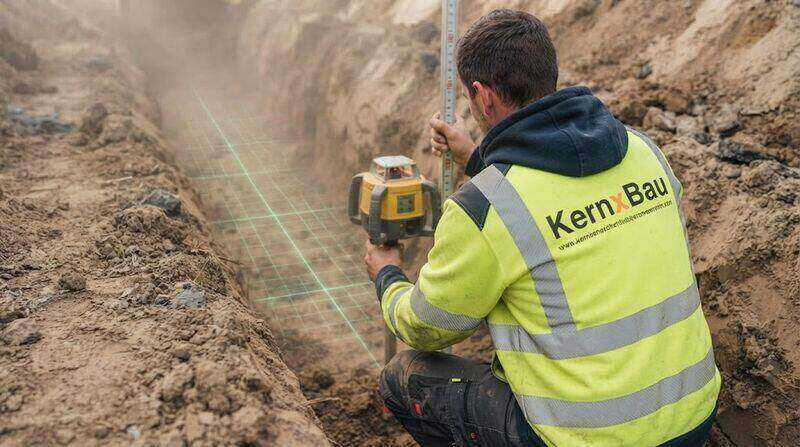
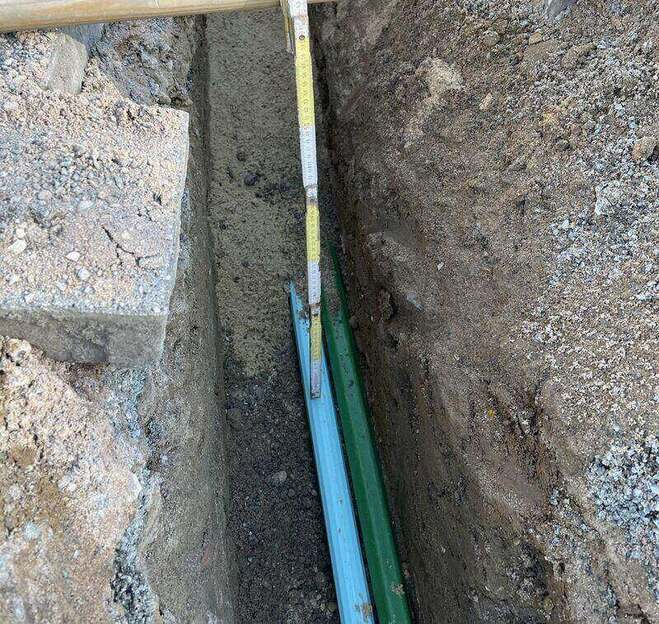
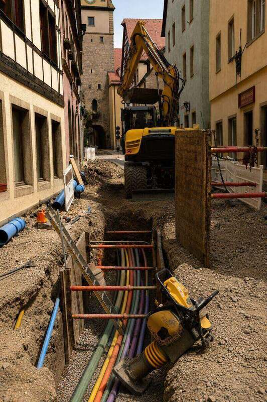
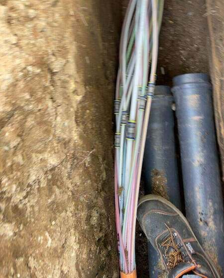
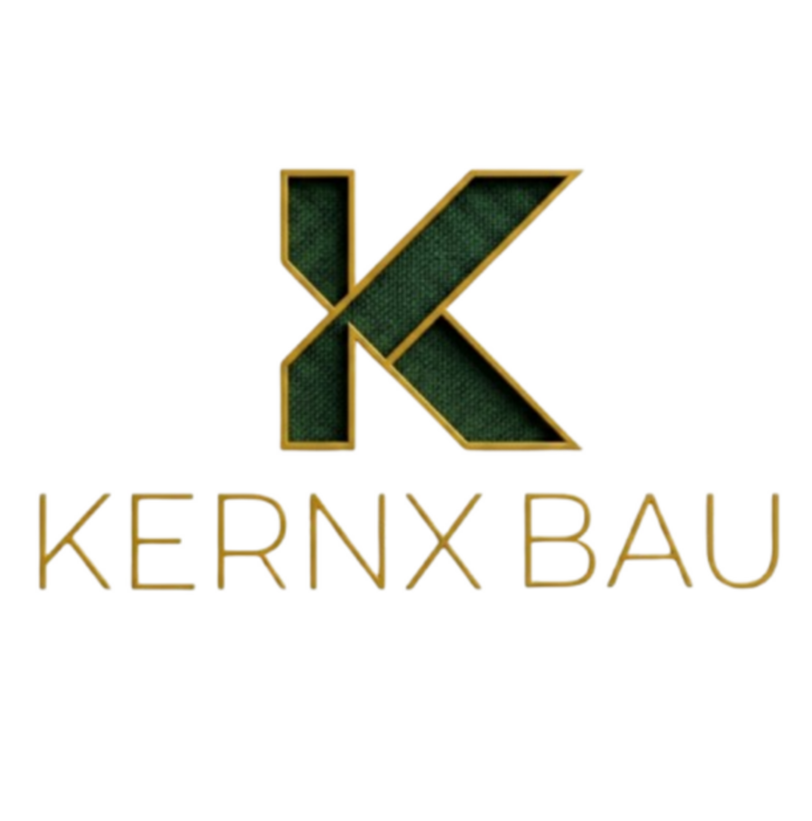

L.01
Erdkabelverlegung
Kabelgraben in offener Bauweise, Sandbett, Trassenband, Einzug und lagegerechte Verlegung nach Plan.
Erdkabel-, Leerrohr- und Breitbandausbau sowie projektbezogene Baustellenleistungen — mit täglichem Aufmaß und Fotodokumentation als Standard, nicht als Zusatzleistung.
Kein festes Paket, keine Reihenfolge. Sie beauftragen genau die Abschnitte, die in Ihrem Leistungsverzeichnis offen sind — vom kompletten Kabelgraben bis zur reinen Dokumentation.
Kabelgraben in offener Bauweise, Sandbett, Trassenband, Einzug und lagegerechte Verlegung nach Plan.
Schutz- und Leerrohre einzeln oder im Bündel, Bögen und Übergänge, Kalibrierung und Endverschluss.
Grabungsarbeiten für FTTH und FTTB: Trassen im Gehweg, Mindertiefe, Hausanschlussgräben und Hauseinführungen.
Aushub, Start- und Zielgruben, Verbau nach Vorgabe, Sicherung und geordnete Lagerung des Materials.
Einrichtung und Räumung, Absperrung, Materialtransporte bis 3,5 t sowie Geräte- und Zufahrtskoordination.
Lagenweises Verfüllen, Verdichten nach Vorgabe und Wiederherstellung von Gehweg, Pflaster und Grünfläche.
Gehweg und Fahrbahn bleiben während der Ausführung begehbar und befahrbar. Vor der Abnahme folgt die Endreinigung.
Nicht erlaubnispflichtige Montage- und Demontagearbeiten als abgegrenzter Leistungsteil — projektbezogen, nach Leistungsverzeichnis.
Jeder Abschnitt wird am Tag der Ausführung aufgemessen und fotografiert: Tiefe, Lage, Material, Abschnitt. Kein Nachrekonstruieren am Projektende, keine Lücke, die Ihre Abrechnung aufhält.
So entsteht der Nachweis
So läuft jeder Auftrag ab — ob 40 Meter Hausanschluss oder ein Trassenabschnitt über mehrere Wochen.
Wir prüfen Pläne, Leistungsverzeichnis und Bestandsunterlagen, klären Zuständigkeiten, Materialabgrenzung und Zufahrt — bevor das erste Gerät kommt.
Absperrung, Verkehrssicherung, Materiallager und Zufahrt werden eingerichtet. Jeder Abschnitt wird vor Beginn fotografisch aufgenommen.
Aushub in offener Bauweise, Sandbett, Trassenband, Leerrohr oder Kabel — lagegerecht nach Plan, mit laufender Tiefenkontrolle.

Jeder Abschnitt wird aufgemessen und dokumentiert: Tiefe, Lage, Material, Datum. Das Aufmaß entsteht täglich, nicht am Projektende.

Lagenweise Verfüllung und Verdichtung nach Vorgabe, danach Wiederherstellung von Gehweg, Pflaster, Asphaltkante oder Grünfläche.

Endreinigung des Baufeldes und geordnete Übergabe mit vollständiger Foto- und Aufmaßdokumentation.







Jeder Abschnitt wird am Tag der Ausführung aufgemessen und fotografiert. Kein Nachrekonstruieren am Projektende.
Was wir ausführen, steht im Leistungsverzeichnis. Was wir nicht ausführen, sagen wir vorher — nicht während der Abnahme.
Die Geschäftsführung ist direkt erreichbar. Keine Weiterleitungskette, keine wechselnden Zuständigkeiten.
Abstimmung mit Bauleitung, Netzbetreiber und Anwohnern läuft direkt und ohne Übersetzungsschleife.
Tagesberichte, Fotoprotokolle und Aufmaßblätter werden strukturiert übergeben — prüffähig für Ihre Abrechnung.
Wir arbeiten nur mit schriftlichem Nachunternehmervertrag inklusive Leistungsverzeichnis und Abnahmeprozess.
Die meisten Nachunternehmer arbeiten mit dem, was der Markt anbietet. Wir haben die Werkzeuge gebaut, die unsere Zusagen tragen — und ein zweites Standbein daraus gemacht.
Foto, Ortsbezug und Freigabe in einem Schritt. Der Nachweis entsteht während der Arbeit, nicht am Projektende aus dem Gedächtnis.
KERNX LIVE ansehenBelege, Projekte, LV-Positionen, Aufmaß, Personal und Geräte in einem selbst gebauten System — ohne Cloud, ohne Abo, mit DATEV-Export.
KERNX APP ansehenDrei eigene Produktsysteme plus Bauteile nach Zeichnung, CAD-Datei oder Muster — ab Stückzahl 1, gefertigt in Hannover.
KERNX 3D ansehenAlle Bilder stammen aus eigenen Einsätzen — ohne Stockfotos.
Dasselbe K steht auf dem Bauhelm, in der Verwaltung und auf jedem gefertigten Teil.

Senden Sie uns einen abgegrenzten Abschnitt aus Ihrem Leistungsverzeichnis. Sie erhalten ein Angebot nach Einheitspreisen — und danach eine Dokumentation, mit der Sie abrechnen können.